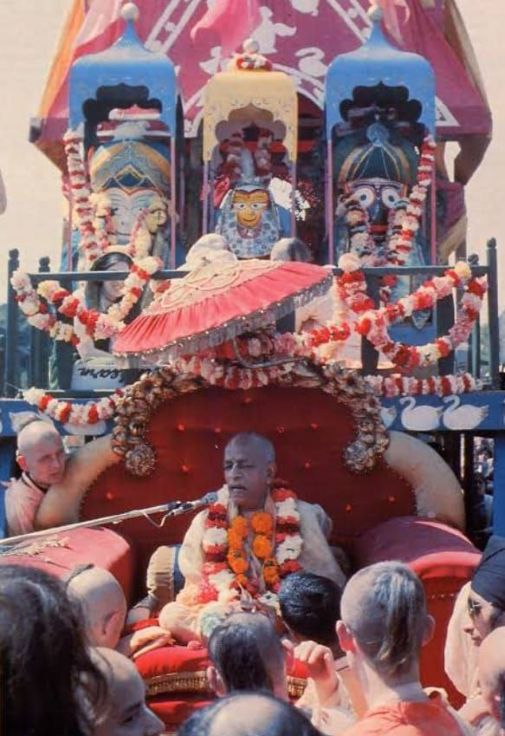

The proper method of dressing Jagannatha is as a Ksatriya King

“The proper method of dressing Jagannatha is as a Ksatriya King, and there is no limit to the opulence you can give Him.”
~Letter of February 19,1973
Krsna said to arjuna in battlefield of kurukshetra pradhanyatah kuru-srestha nasty anto vistarasya me O Arjuna, for My opulence is limitless.(10.19) this is declared universally by lord and he has showed this fact at every step by displaying his opulence in his bhauma-lila. but something which does not fits in the tiny minds of the population is that by service of krsna, krsna takes care of all needs of his devotee as said by prabhupad:
Therefore, by serving Krishna directly the result of the service indirectly comes to us (Letter to yamuna)
By his immense and extraordinary service to the opulent lord Sri Jagannath Srila Prabhupad was also an opulent sannyasi. The world never saw a sannyasi who is so opulent and opulent to this extent. Anyone who saw him got captivated by his presence. No one can Forget Srila Prabhupad.
~Admin